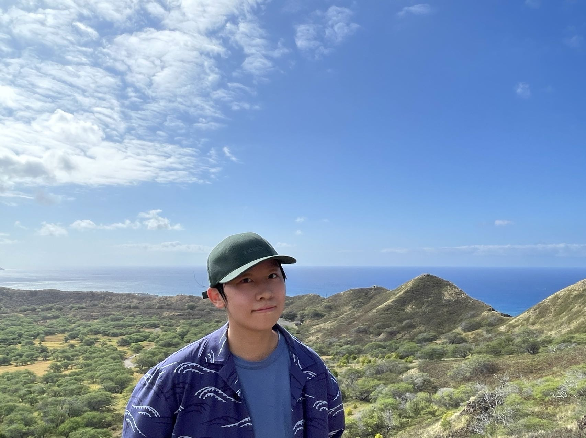

Yating Wu

Hi, y'all, I'm a Ph.D. student from the ECE department at UT Austin. I'm supervised by Prof. Jessy Li and Prof. Alex Dimakis. My research interest focus are natural language processing and computational linguisitic. Outside research, I love soccer, table tennis and Japanese. You can find my CV
here
Research Interests
Discourse Relationship, Text Elaboration, Speech Disfluency, Multilinguality and Grammatical Error Correction.
Education
- Ph.D., (Jan. 2020 - Now) in Computer Enginnering
- Department of Electrical and Computer Engineering,
- University of Texas at Austin.
Advisors: Prof. Jessy Li,
Prof. Alex Dimakis
Group: UT NLP Group,
Wireless Networking and Communications Group(WNCG)
- B.Eng., (Spt. 2014 - Jul. 2019) in Computer Science and Technology
- B.A., (Spt. 2014 - Jul. 2019) in Japanese
- Department of Computer Science; Department of Foreign Languages
Dalian University of Technology.
- Undergraduate Exchange Student, (Spt. 2017 - Aug. 2018) in EEIC
- Department of Information & Communication Engineering,
The University of Tokyo.
Advisor: Prof. Toshihiko Yamasaki
Group: Aizawa Yamakata Matsui Laboratory
Publication
- Venelin Kovatchev, Trina Chatterjee, Venkata S Govindarajan, Jifan Chen, Eunsol Choi, Gabriella Chronis, Anubrata Das, Katrin Erk, Matthew Lease, Junyi Jessy Li, Yating Wu and Kyle Mahowald
Longhorns at DADC 2022: How many linguists does it take to fool
a Question Answering model? A systematic approach to adversarial attacks.
In Proceedings of the First Workshop on Dynamic Adversarial Data
Collection (DADC) at the Annual Conference of the North American Chapter of
the Association for Computational Linguistics (NAACL), pages 41--52, 2022.
[ bib |
pdf |
poster |
slides |
tech-report ]
Experience
Working Experience
- Amazon Prime Video, Summer 2021
Software Develop Engineer Intern(received return offer). [The project got launched in prime video offical site]
- Implemented a Ranking System for ranking the events based on its popularity. I wrote over 10,000 lines java code and assured over 97% coverage.
- Designed and Implemented a Ranking Data DynamoDB table for saving viewership data and filter events.
- Set up Lambda to automatically pulling and putting latest information to Database.
- Contributed to the main team repository to sort events based on viewership data.
- Ingested with inner service to create two new carousals to provide this service for new customers.
Teaching Experience
Awards
- VMware Codehouse Palo Alto 1st place, Jul. 2021[post]
- Outstanding graduates, Jun. 2019
Links
- Department of Electrical and Computer Engineering
- The University of Texas at Austin
- The University of Tokyo